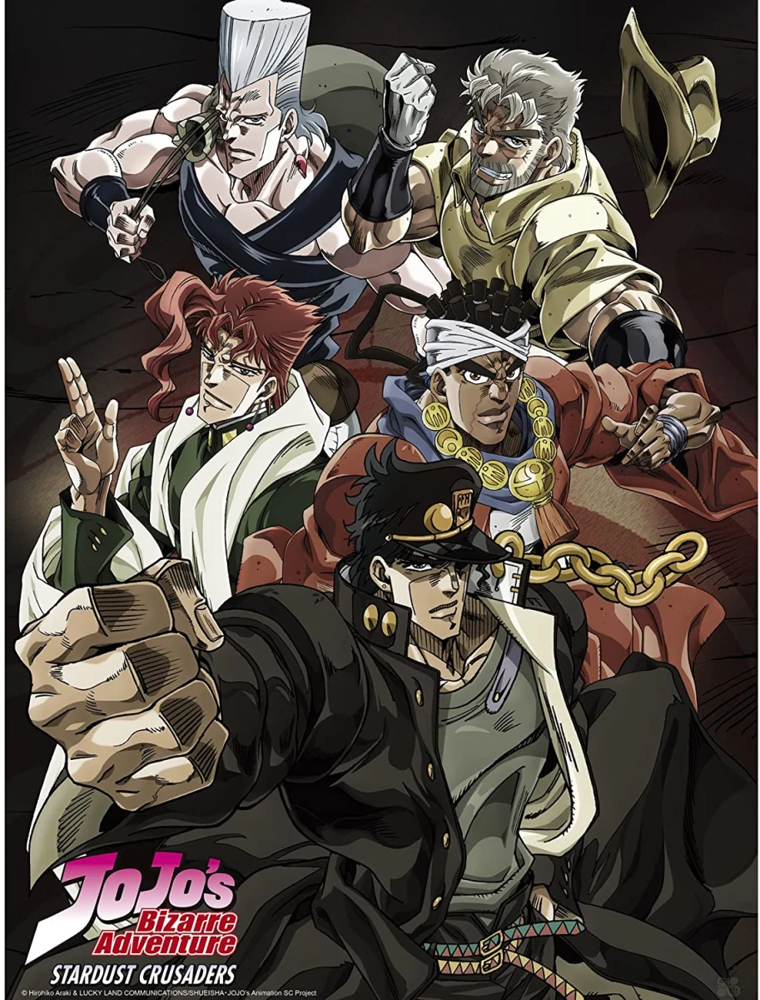

Episódios Favoritos
Stardust Crusaders; Ep. 1 - O Homem Possuído por um Espírito Maligno
O começo da jornada de Jotaro e seus amigos.
Golden Wind; Ep. 25 - Spice Girls

Uma batalha épica contra um dos maiores inimigos.
Stardust Crusaders; Ep. 48: The Last Stand

A luta final que define o destino de todos os personagens.